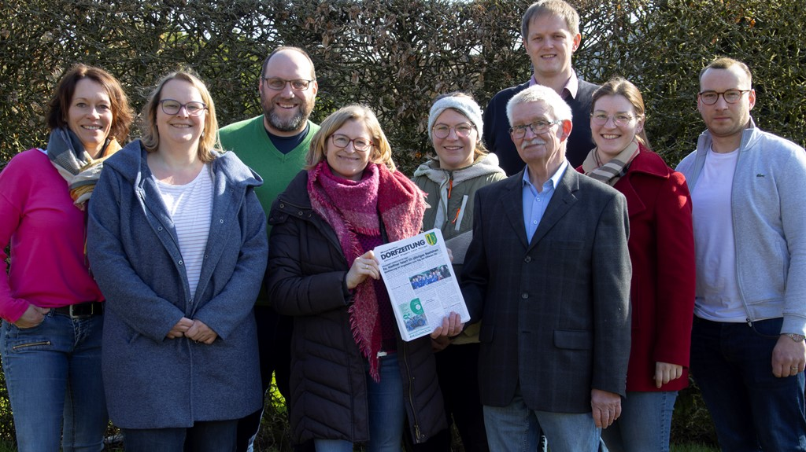

Wer von uns hätte das gedacht, als am 27.10.23 die AG „Festzeitschrift“ zusammen kam, um bei kleinen Knabbereien und dem einen und dem anderen Getränk (und noch einem und dann aber wirklich dem letzten), noch einmal an die gemeinsame Arbeit und die miteinander verbrachte Zeit zu denken. Im Laufe des feucht- fröhlichen Abends wurde die Frage in die Runde gegeben, ob sich einige AG- Mitglieder finden, die bereit wären, die Betreuung der „Meerhofer Dorfzeitung“ aus den bewährten Händen von Bernd Sieren zu übernehmen. Wir alle (und einer ganz besonders intensiv) haben uns diese Frage durch den Kopf gehen lassen und entschieden: „Das ist eine gute „Schnapsidee“ - Da sind wir dabei und hoffen, es wird prima!“ Mit dieser Ausgabe der „Meerhofer Dorfzeitung“ stellen wir euch nun das neue Redaktionsteam vor:

Beim erste lockeren Treffen am 08.12.23 wurde klar: „Aus Schnaps wird Ernst, nun geht’s los!“ Seitdem wurden Ideen besprochen, Rubriken kreiert, große und kleine Themen gesammelt, Aufgaben verteilt, Erscheinungszeiträume angepeilt … Bei all dem merkten wir schnell, dass es etwas ganz anderes ist, eine fortlaufende Zeitung zu gestalten, als die „KSF- Festzeitschrift“ als einmalige Ausgabe zu erstellen. Wir sind deshalb sehr froh darüber, dass Bernd sich bereiterklärt hat, uns auch weiterhin mit seinem profunden Wissen und seiner Erfahrung zu unterstützen.
An dieser Stelle ist es Zeit, Bernd Sieren ein riesengroßes „Dankeschön“ auszusprechen, für die großartige Arbeit, die er seit der ersten Ausgabe der „Meerhofer Dorfzeitung“ im April 2016 geleistet hast. In Personalunion als Herausgeber, Chefredakteur, Reporter am Puls der Zeit, Fotograf, Mediengestalter und Zusteller hat er nun acht Jahre für ein regelmäßiges Erscheinen der Zeitung gesorgt und es bis heute auf 17 Ausgaben in mehr oder weniger regelmäßigen Abständen gebracht.
Ob den Teilnehmern der Dorfwerkstatt, in welcher der Wunsch nach einer Dorfzeitung formuliert wurde, klar war, welchen Glückgriff sie taten, als Bernd für die Betreuung dieser Zeitung gewonnen werden konnte? Bereits als Schüler entdeckte er, sein bis heute ungebrochenes Interesse für die Herstellung von Druckerzeugnissen aller Art und hat schon in den 60er Jahren an der Schülerzeitung seines Gymnasium Theodorianum in Paderborn mitgewirkt. Weiter ging es mit dem „Schul- Echo“ an der Franziskus- Hauptschule Westheim und dann der SPD- eigenen „Marsberger Rundschau“. All dem folgten viele hilfreiche Info- Blätter und Orientierungshilfen für seine neu angekommenen 5- Klässler an der Hauptschule Marsberg und letztlich dann die „Meerhofer Dorfzeitung“. Bernd sagt: „Wenn ich nicht so gern Lehrer gewesen wäre, dann wäre ich Drucker geworden.“ und gerät über der Schilderung von alten Bleisatz- und den folgenden Offset- Verfahren ins Schwärmen. Vieles im Bereich der digitalen Textverarbeitung, Layout usw. hat er sich durch Versuch und Irrtum selbst beigebracht und erklärt schmunzelnd, neben der Linguistik und der Musik sei eine seiner größten Leidenschaft der Umgang mit der digitalen Technik. Aus gesundheitlichen Gründen muss Bernd Sieren sich nun schweren Herzens von der Hauptverantwortung für „seine“ Dorfzeitung verabschieden. Er erklärt, es sei ihm ein großes Anliegen gewesen, dass diese weiter herausgegeben werden wird und eine umso größere Freude, nun den Staffelstab übergeben zu können.
Ihr haltet also heute unsere erste Ausgabe der „Meerhofer Dorfzeitung“ in der Hand: Bitte fühlt euch eingeladen, am Inhalt aller folgenden Ausgaben mitzuwirken, indem ihr uns gern Anregungen für Themen oder Termine gebt, stellt uns Fotos und Geschichten zur Verfügung, bringt euch ein mit Leserbriefen und unterstützt uns dabei, eine interessante Zeitung für alle zu gestalten.